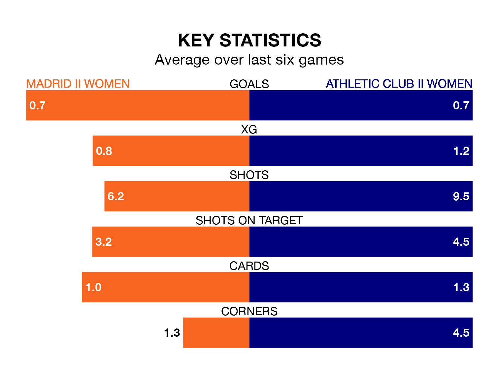

Sunday's match sees the league's two bottom sides face each other, as rock-bottom Madrid II Women host Athletic Club II Women.
Madrid II have picked up eight points from their first eight Primera Federación Femenina games, with two wins and two draws.
That is one point less than Athletic Club II have collected, having won one and drawn six.
Madrid II are in terrible form in Primera Federación Femenina, with no wins and a draw from their last six games.
With no wins and three draws over that period, Athletic Club II's form is slightly better – they have taken three points from 18, compared to the hosts' one.
With 11 goals in 17 games so far this season, Madrid II are the league's joint-second-lowest scorers with 0.6 goals per game. And they are conceding more than average, letting in 30 goals at a rate of 1.8 per game.
The away team are also below average scorers, with 0.6 goals per game, compared to a league average of 1.2. They have conceded 1.7 goals per game.
Madrid II's last match was on February 3, a 3-2 loss against Alhama, with getting the goals for Madrid II.
Athletic Club II drew 1-1 with Europa Women last time out, on February 4, with on the scoresheet.
Updated: 13:52 (UTC), 05/02/24